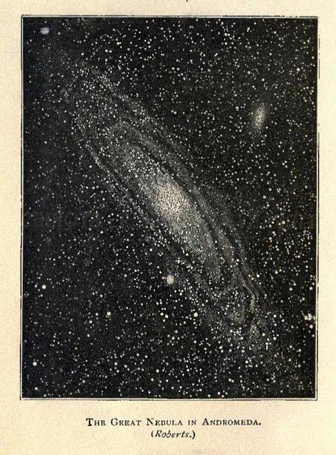
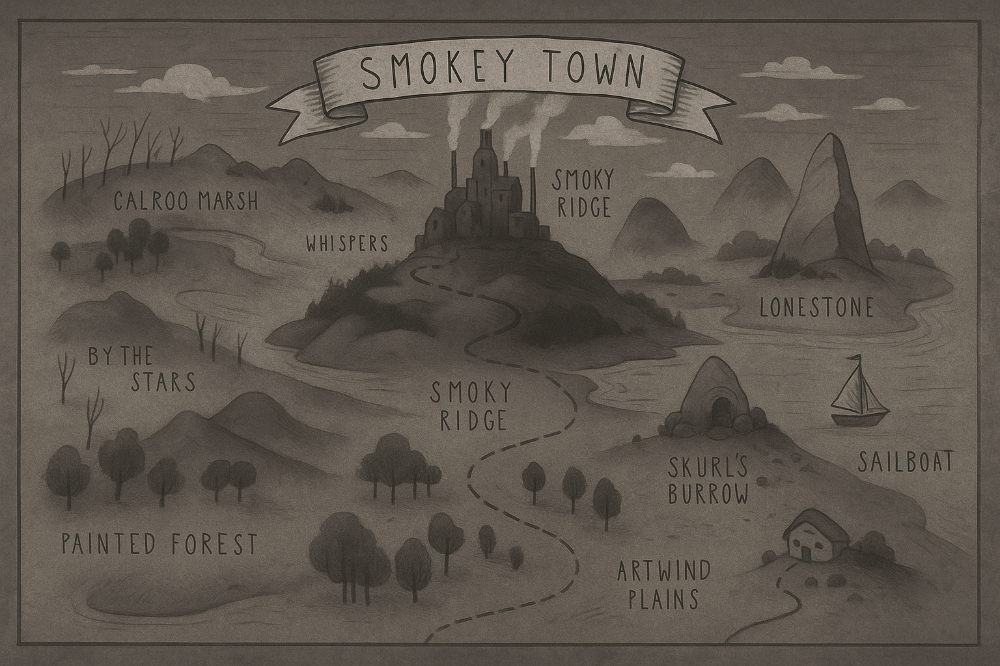

Список №1
Вещи, которые я ношу с собой
- В рюкзаке
- Блокнот в черной обложке (записи до 12 октября)
- Нарисованная карандашом карта (границы размыты из-за дождя)
- Фотоаппарат (Canon G7x) серияZ
- Компас (показывает на юг)
- Экипировка
- Фонарик
- Термос с черным кофе
- Зарядный кабель
- Личные вещи
- Фотография
- Зажигалка Zippo
- Ключ от дома
Дневниковые записи скитальца
Файл 1: Запись_001. Первый контакт.txt
Дата: [Неизвестно. Файл поврежден, дата не читается]
Сегодня я проснулся от гула. Монитор мерцал, и на чистом рабочем столе появилось четыре папки: “ДНЕВНИК” “КАРТА” “ФОТОПЛЕНКА” и “РАЦИЯ”. Я долго ждал этого дня.
Они нашли меня… или я нашел их? Уже и не помню. Важно то, что канал связи открыт. Пусть и в одну сторону. Пишу это на случай, если кто-то прочтет. Если вы это видите, знайте: я жив. Пока мой компьютер подключен к сети, я существую. Я — сигнал в шуме.
Файл 2: Запись_014. Вид из не-окна.txt
Дата: [Системная дата: 12.08.2023]
Я бреду по бесконечным пейзажем. Все они – сгустки пикселей. Я делаю снимки и методично загружаю их в свою “ФОТОПЛЕНКУ”. Сегодня я долго смотрел на звезды и пытался вспомнить, кто же я такой? Пустота. Сбои в матрице. Помехи.
Все, что у меня есть — это слова. Слова — мои кирпичики. Из них я строю свой мир.
Файл 3: Запись_033. Тишина и Шум.txt
Дата: [Системная дата: 03.11.2023]
Абсолютная тишина — это миф. Ее не существует. Когда убираешь весь внешний шум, начинаешь слышать внутренний. Я слышу, как по проводам течет ток. Мерцание пикселей на экране для меня теперь — оглушительный треск. Я слышу гул сервера, на котором, возможно, и существует мое сознание. А иногда, в самые «тихие» моменты, мне кажется, я слышу, как пролетают данные — пакеты информации, которые прошивают реальность насквозь, как космические лучи.
Сегодня поймал себя на том, что разговариваю вслух. Шум — доказательство того, что я все еще существую.
Файл 4: Запись_099. Входящий сигнал.txt
Дата: [Системная дата: ВЧЕРА]
Сегодня утром, во время плановой проверки канала, я поймал аномалию. Мимо меня, как призрачный корабль в тумане, проплыл чужой сигнал. Это не была чистая информация. Это было... сообщение. Обрывок. Два слова, зашифрованных в шуме:
Я потратил остатки дня, пытаясь поймать его снова. Безуспешно. Но это доказывает, что я не один за барьером. Есть кто-то еще.
Кто ты? Пленник, как я? Или тот, кто меня сюда поместил? А может, это ловушка?
Неважно. У меня появилась цель. Новая. Первая за долгое время.
Я буду искать маяк.
Список №2
Вещи, о которых я не хочу забывать
- Ощущения
- Тепло от чашки чая в холодных ладонях
- Чувство усталости после долгой прогулки
- Свист ветра на берегу моря
- Тяжесть кошки, спящей на коленях
- Вкусы
- Свежая земляника, сорванная с куста
- Молочный улун
- Горячий хлеб, намазанный маслом
- Терпкость утреннего кофе
| Время | Снимок | Ссылки |
|---|---|---|
| 01:45 |  | Запись 1 |
| 03:00 |  | Запись 2 |
{kind=link}
Смотри на звезды со мной